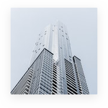

 31 июля 2017 года, в РСПП, состоялось торжественное открытие многодневного семинара для специалистов по информационной безопасности Министерства обороны Социалистической Республики Вьетнам. Им будет прочитан курс лекций по кибербезопасности, подготовленный российскими IT-специалистами, представляющими крупнейшие российские компании.
Визит наших друзей и партнёров из Социалистической Республики Вьетнам, прибывших в Российскую Федерацию, состоялся в рамках реализации плановой программы взаимодействия и развития отношений между Комитетом по вопросам обеспечения безопасности в сфере предпринимательской деятельности Международного Конгресса промышленников и предпринимателей и МКПП в целом, с национальными объединениями других государств, сфера деятельности которых – обеспечение всех видов безопасности в негосударственном секторе экономики.
Сегодняшнее мероприятие, которое подготовил Подкомитет МКПП по вопросам обеспечения информационной безопасности, открывает цикл семинаров по вопросам обеспечения кибербезопасности для наших вьетнамских коллег. Руководитель вьетнамской делегации, господин Нгуен Ван Нгог, является руководителем национального Центра внедрения новейших информационных технологий при Департаменте информационной безопасности Минобороны Вьетнама. В составе делегации, помимо представителей компаний, производящих продукты в области IT- технологий, присутствуют руководители среднего звена Министерства обороны Социалистической Республики Вьетнам, которые определяют ведомственную политику закупок по кибер-специфике. Это говорит о большом и востребованном потенциале российских технологий, которые ждут и готовы принять многие страны мира, дружественно настроенные по отношению к Российской Федерации.
Комитет МКПП по безопасности уже проводил рабочие встречи с представителями крупного бизнеса, занимающегося технологиями безопасности в сфере защиты связи, информации, коммуникаций, АСУ ТП и других направлений из Индонезии, Малайзии, Сингапура, Индии и Ливана. И для каждой заинтересованной стороны, российские специалисты в области кибербезопасности и других направлениях комплексной безопасности, которых объединяет площадка Комитета МКПП, находят индивидуальные решения и предлагают продукцию, наиболее подходящие для нужд того или иного региона. Более того, специалистами Комитета, уже сегодня, во Вьетнаме проводиться обучение киберспециалистов по вопросам кибербезопасности для воздушного транспорта и начат цикл переговоров по внедрению АПК Безопасный Город для города Хо Ши Мин на базе российских разработок. И в дальнейшем, сфера сотрудничества, будет расширяться.
При открытии мероприятия, с приветственными словами выступили: Виктор Черепов – Исполнительный Вице-президент РСПП, Николай Рогожкин – Президент МС «ЕВРАЗИЯ», генерал армии, Анатолий Перцев – Вице-президент МКПП, Член Правления РСПП, Председатель Комитета МКПП по вопросам обеспечения безопасности в области предпринимательства, Виктор Ананьев – директор ННФ ИПБиУР и другие. Вьетнамские гости оценили радушный прием российской стороны и выразили общее мнение делегации о необходимости усиления интеграционных связей в сфере безопасности.